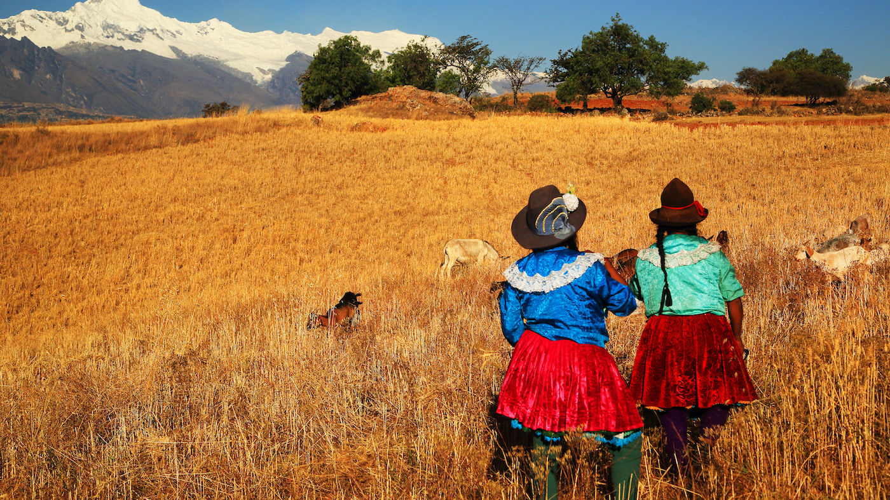

Kom alles te weten over de talen binnen Zuid-Amerika.
In Brazilië spreekt men Portugees; in Frans-Guyana Frans; in Guyana, Zuid-Georgia, op de Falklandeilanden Engels; in Suriname Nederlands. Alle andere landen zijn Spaanstalig.
Daarnaast worden er in verschillende landen nog enkele oude inheemse talen, als Guaraní en Quechua gesproken. De Spaans, Portugees en Frans sprekende landen behoren met Mexico en andere Frans- en Spaanstalige landen in Midden-Amerika tot Latijns-Amerika. Guyana en Suriname worden zo wél tot Zuid-Amerika, maar niet tot Latijns-Amerika gerekend.